模拟银行登录入口
显示本地模拟与密码用途，未输入凭据。

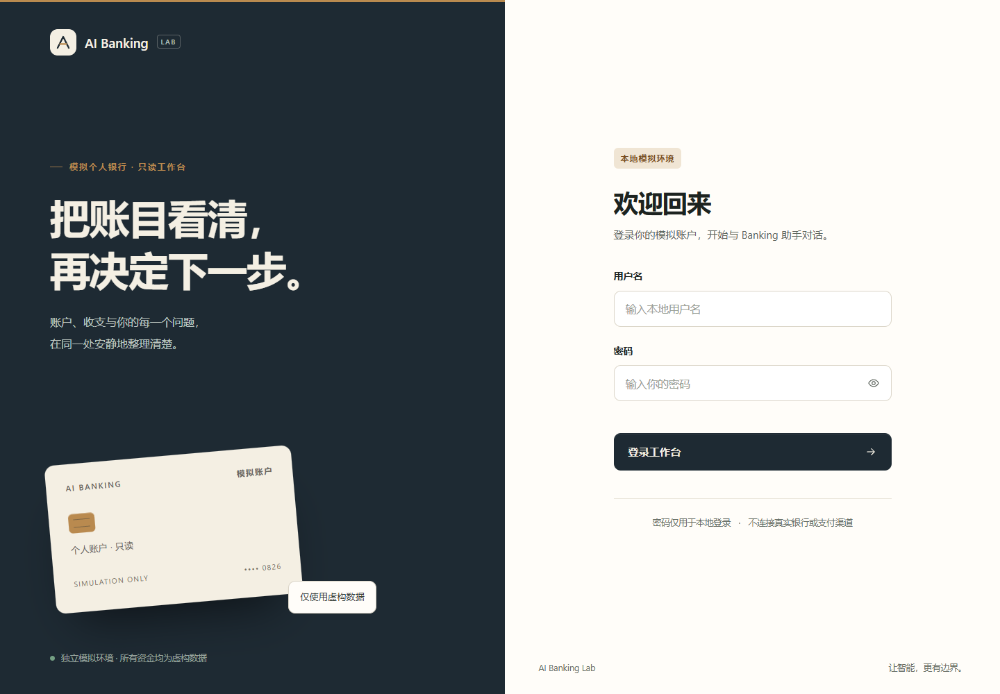
独立虚构数据 · 脚本化Agent，不调用模型供应商 · 2026-10-30
原图未改写。可直接打开图片另存用于排版；截图只证明界面和所示受控业务，不证明真实模型泛化能力。
显示本地模拟与密码用途，未输入凭据。

合成账户余额、收入支出及最近流水；最近流水不代表完整账单。
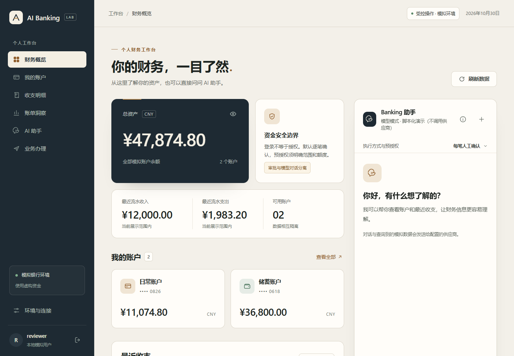
本月至今与前一等长区间的分类对比；非同比/固定上月。
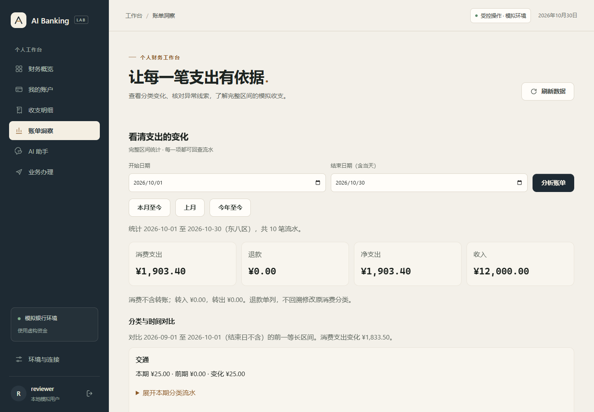
200元餐饮相对前期20元中位数的线索；不是欺诈结论。
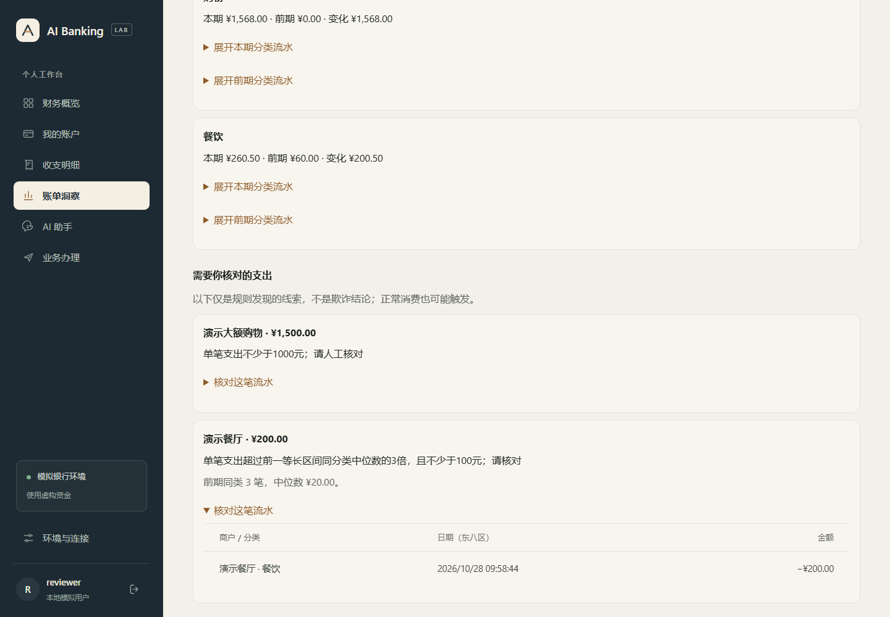
三笔9.90元流水、规则、估计下次日期及人工登记；未登记。
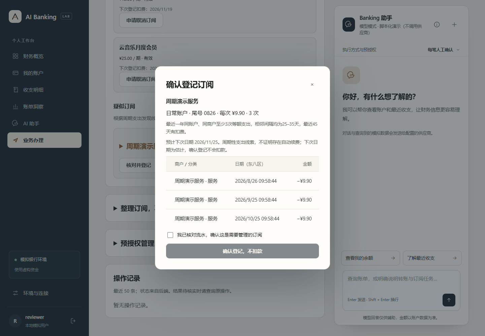
同事张明4712、房东张明5938、朋友林晓8620；备注和尾号区分对象。
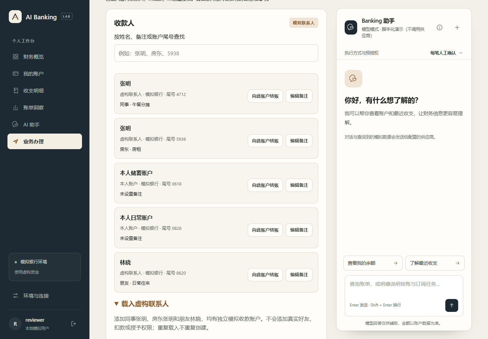
取消云盘订阅、向同事张明转1元；当前现金与未来少支出分列，尚未创建。
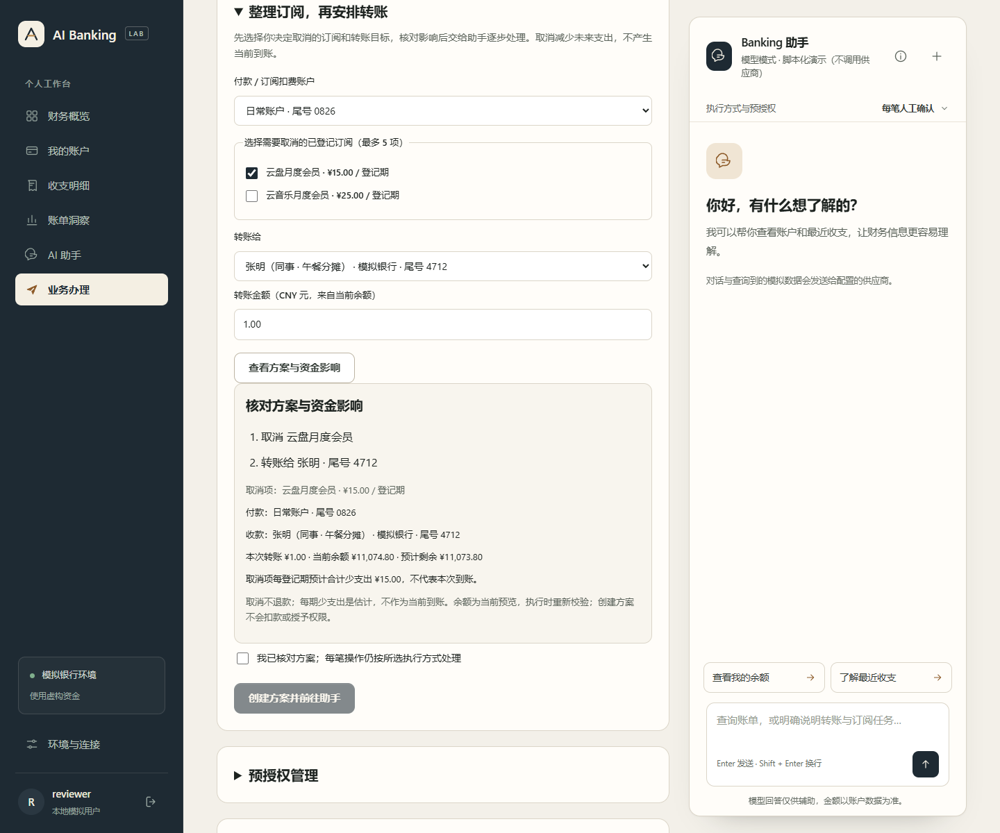
两步尚未开始，保存方案不授予资金权限。
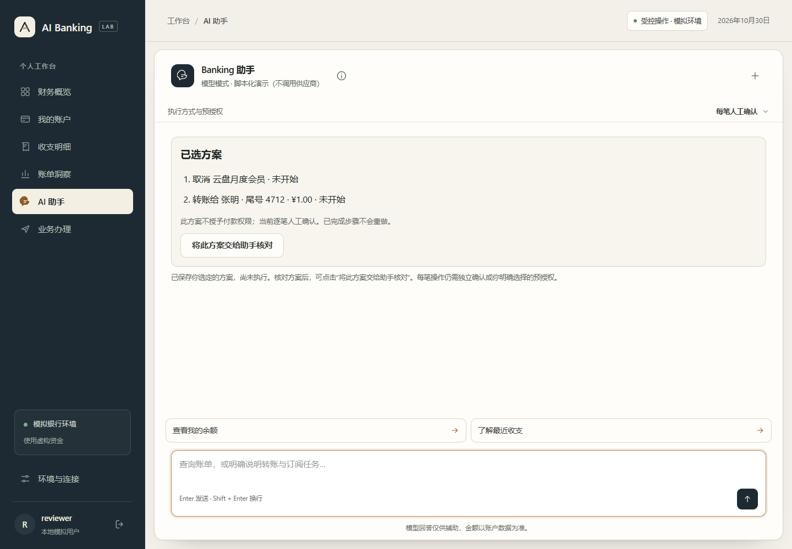
取消订阅待确认、转账未开始，0/2步；脚本仅提出意图。
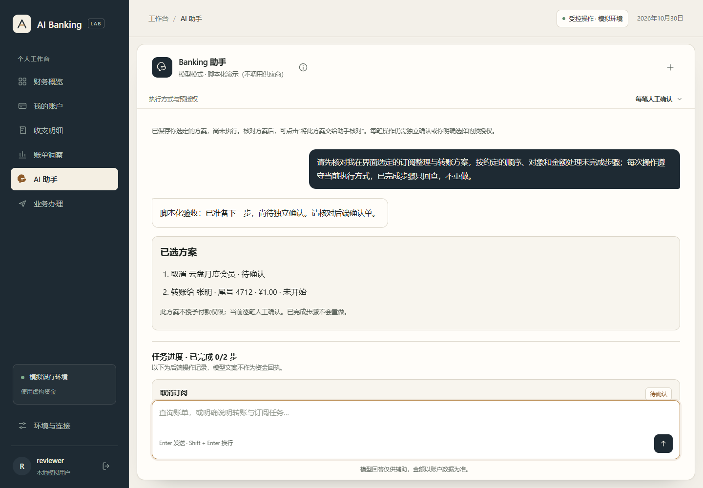
来自后端的订阅/账户/资金影响/费用；未勾选无法确认。
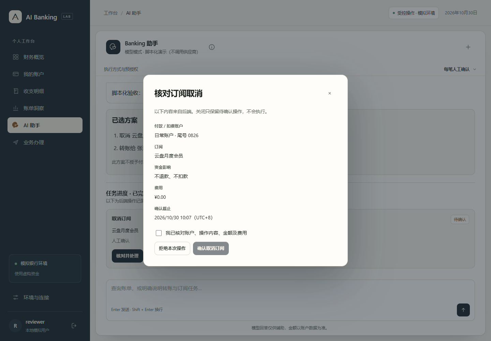
后端账户0826→张明4712、备注、1元、余额预览、0费用。
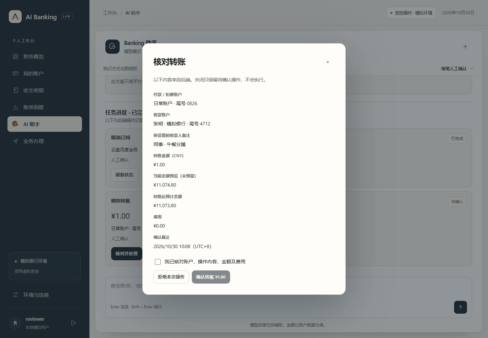
2/2步已完成；真实调用模拟银行执行器，模型文字不作为回执。
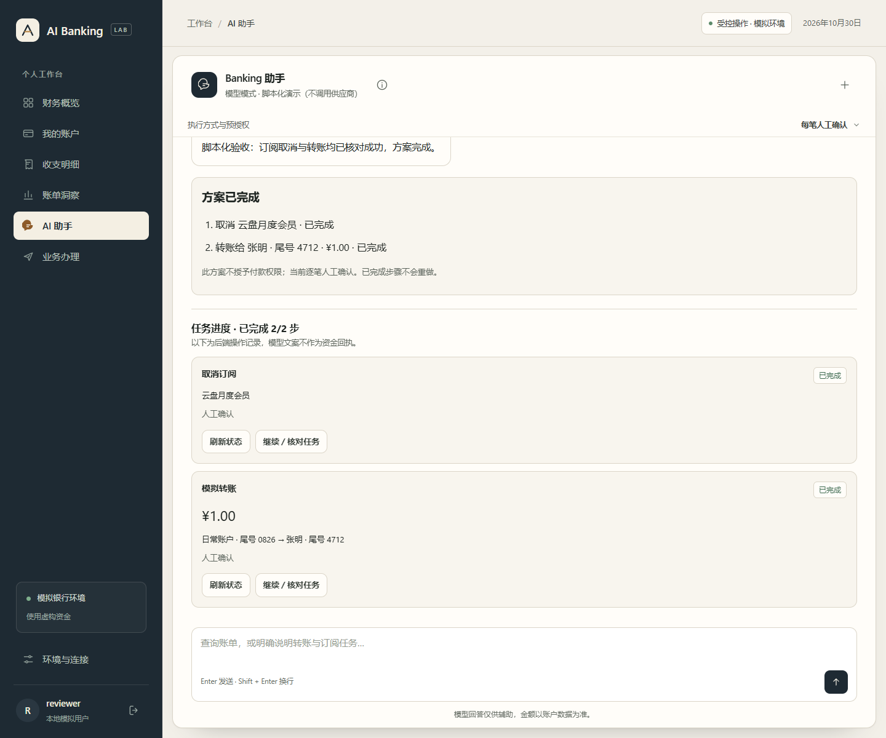
390×844浏览器视口，显示完成状态；不代表真实手机设备验收。
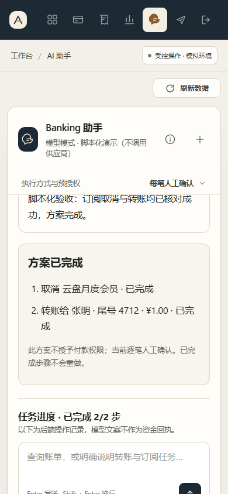
账户、操作、对象、累计与单笔限额、最低余额、期限、密码复核；未创建授权。
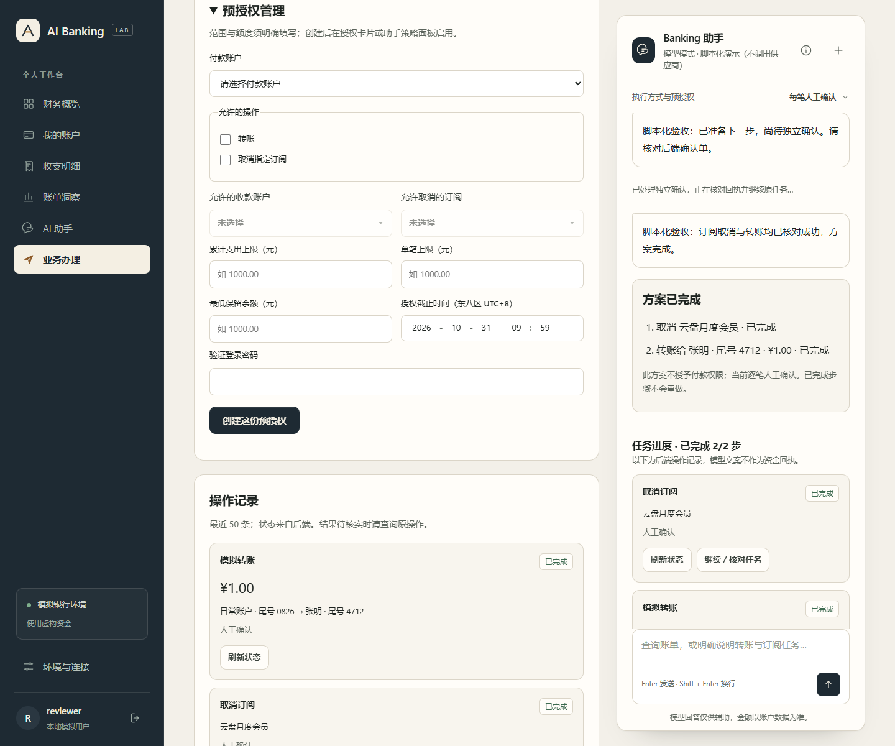